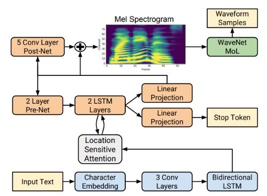
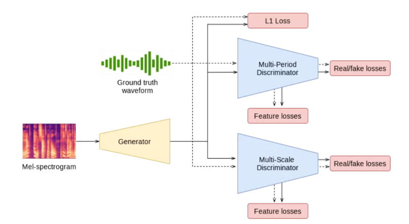
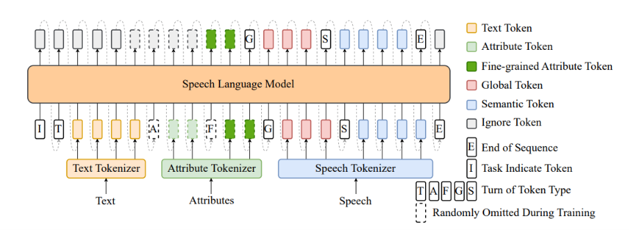

| Text | Spark-TTS | Tacotron2 + HiFiGAN | Ground Truth |
|---|---|---|---|
| Nhà có ba khẩu, một mẹ già hơn tám mươi tuổi. | |||
| Xin chào địa phương. |
| Text | Spark-TTS | Tacotron2 + HiFiGAN | Ground Truth |
|---|---|---|---|
| Nhà có ba khẩu, một mẹ già hơn tám mươi tuổi. | |||
| Xin chào địa phương. |
Tacotron2 là mô hình sequence-to-sequence dùng cơ chế attention, chuyển trực tiếp văn bản đầu vào thành mel-spectrogram. Bộ encoder-decoder hồi quy (RNN) kết hợp location-sensitive attention giúp mô hình học được sự tương ứng giữa từng đơn vị văn bản và từng frame âm thanh. Mel-spectrogram đầu ra sau đó được đưa qua một vocoder riêng (ví dụ HiFiGAN) để tổng hợp thành dạng sóng âm thanh cuối cùng.

HiFiGAN là vocoder dựa trên GAN, có nhiệm vụ chuyển mel-spectrogram thành dạng sóng âm thanh thô. Generator dùng các khối Multi-Receptive Field Fusion để mô hình hoá đồng thời nhiều độ phân giải tần số, trong khi hai discriminator (multi-period và multi-scale) giúp tín hiệu đầu ra tự nhiên, ít artefact. Nhờ kiến trúc gọn nhẹ, HiFiGAN tổng hợp âm thanh nhanh hơn nhiều so với các vocoder tự hồi quy như WaveNet, trong khi vẫn giữ chất lượng âm thanh cao.

Spark-TTS là mô hình TTS dựa trên kiến trúc LLM, sử dụng BiCodec — một codec giọng nói single-stream tách giọng nói thành hai loại token bổ trợ nhau: semantic token mang nội dung ngôn ngữ và global token mang đặc trưng người nói. Các token này được đưa vào backbone Qwen2.5 cùng cách sinh chain-of-thought, cho phép điều khiển cả ở mức thô (giới tính, phong cách nói) và mức chi tiết (cao độ, tốc độ nói). Với chỉ khoảng 1 tỷ tham số, Spark-TTS đạt chất lượng tương đương các mô hình lớn hơn nhiều nhưng tốc độ sinh nhanh hơn đáng kể.
